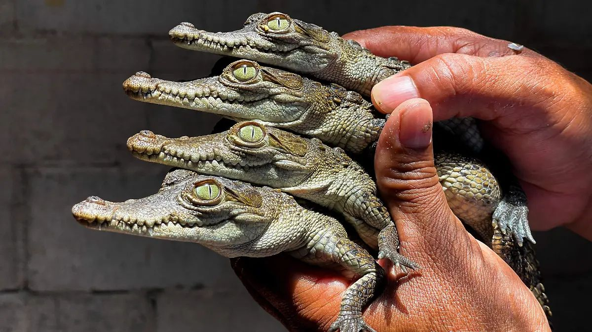
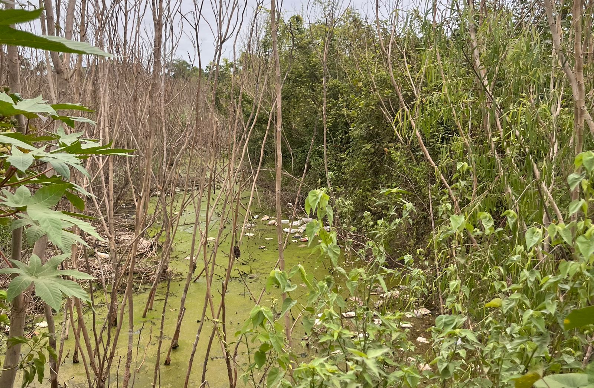
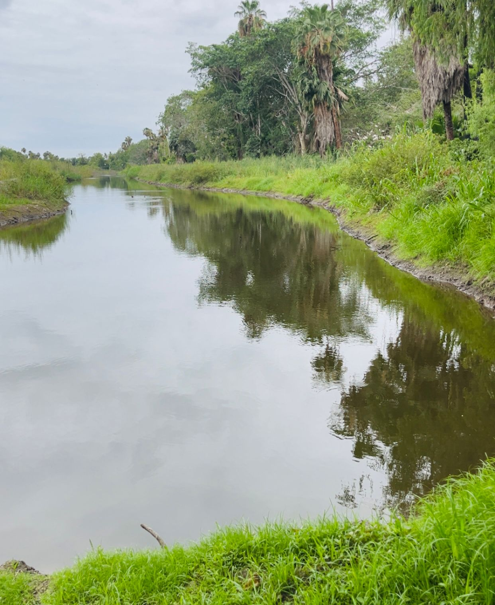
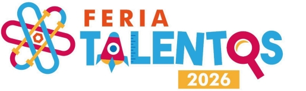
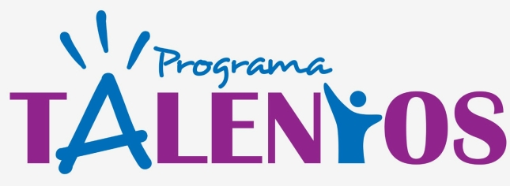

Quiénes Somos
Conociendo al Protagonista: El Crocodylus Acutus
Comenzaremos presentándote a la única especie de cocodrilo nativa de Sinaloa, y una de las únicas 3 especies nativas de todo México, el Crocodylus Acutus, o mejor conocido cómo cocodrilo de rio o americano, conocerlo es importante si queremos entenderlo, esta especie es sumamente interesante, aquí te platicamos el por qué.
Normalmente se tiene el mito de que las especies que habitan en ríos, canales y humedales en Eldorado son solamente caimanes, pero no es así.

Datos Súper Interesantes de la Especie
- Tamaño: Estos individuos pueden llegar a medir hasta 4 metros, ¡Casi o igual a un automóvil promedio!, siendo los machos más grandes que las hembras.
- Fisonomía: Tienen una cabeza estrecha y un hocico largo, lo que lo distingue de los caimanes.
- El Sexo y la Temperatura: Las hembras incuban sus huevos para mantenerlos calientes, y aquí te va el dato. A diferencia de nosotros y de otras especies en las que nuestro sexo se determina por cromosomas y genética, en el de esta especie el sexo de las crías está determinado por la temperatura de incubación… es decir, influye completamente la temperatura del medio ambiente.
- Temperaturas altas de 31 a 33 grados Celsius, producen crías macho.
- Temperaturas inferiores a 31 grados Celsius, producen crías hembra.
- Primeros Días: Tras la eclosión, las crías se alimentan de la yema del huevo durante dos semanas, a medida que crecen, disminuye el número de depredadores potenciales disminuyen, pero estos al ser recién nacidos son muy vulnerables y deben esconderse, al madurar y crecer, estos empiezan a cazar insectos en tierra.

- Reproducción: Su temporada de cortejo y apareamiento va desde enero hasta mayo, esto los hace un poco más territoriales y activos, ya que compiten entre machos por las hembras.
- Longevidad: ¡Pueden vivir hasta 100 años! Pero su esperanza de vida promedio va desde los 60 hasta los 70 años, estos presentan una alta taza de mortalidad infantil, solo 1 de cada 4 alcanza los 4 años de edad.
¿Por qué están saliendo de su hábitat?
Y por último… Estos animales son sumamente solitarios en su hábitat natural, prefieren estar solos y evitan la mayoría de las perturbaciones, entonces viene la duda, ¿Por qué estos animalitos están saliendo de su hábitat?
Muchas personas creen que los cocodrilos están invadiendo las zonas habitadas por los humanos; sin embargo, en realidad somos nosotros quienes hemos ocupado parte de las áreas que utilizan para desplazarse entre ríos, lagunas y otros cuerpos de agua, en busca de un lugar con mejores condiciones para sobrevivir.
Con el crecimiento de las ciudades y la expansión de las zonas agrícolas, gran parte de estos corredores naturales se han visto modificados o fragmentados, además, factores como las sequías, el desvío de agua para la agricultura y la disminución de alimento disponible han reducido la calidad de sus hábitats.
Ante estas condiciones, los cocodrilos se ven obligados a buscar lugares con mayor disponibilidad de agua y recursos para sobrevivir, como muchas de las zonas urbanizadas se encuentran dentro de sus rutas naturales de desplazamiento originales, ha provocado un aumento en los encuentros entre personas y cocodrilos.

Por lo tanto, el incremento de estos avistamientos no significa que los cocodrilos estén expandiendo su territorio hacia las ciudades, sino que las actividades humanas han alterado sus hábitats y ocupado las zonas por las que tradicionalmente se desplazaban, esto, sumado a los efectos del cambio climático y al uso intensivo del agua, ha favorecido una mayor interacción entre ambas especies.
Su Hogar en Eldorado y la Importancia del Ecosistema
¿Te gustaría saber cuales son los lugares dónde estos habitan aquí en Eldorado?
Sus lugares preferidos son el rio San Lorenzo y la laguna de Chiricahueto, parte del sistema de humedales y manglares, ya que requieren agua dulce o salobre.

Hay un tipo de ecosistema específico que es muy importante en nuestra zona, estos son los humedales, estos engloban lagunas, marismas, nos proporciona servicios ambientales, es decir, actúan cómo filtro natural mejorando la calidad del agua, y actúan como esponja, absorbiendo y reteniendo el agua en épocas de lluvias intensas, evitando inundaciones, también son hogar de muchas especies de aves, peces y plantas acuáticas…
y ¿Qué crees? Si, el Crocodylus acutus es sumamente importante en este ecosistema, ya que son los principales depredadores, con esto regula poblaciones de peces y otras especies y mantiene el equilibrio de los ecosistemas acuáticos.
Si te interesa un poco más el tema, querrás saber que ya existe un área protegida por las autoridades del municipio, esta está a cargo de un activista, que busca salvar al cocodrilo de rio ante el crecimiento de la mancha urbana.
Ver noticia sobre la reserva¿Qué hacer en caso de un encuentro?
Para finalizar esta pequeña recaudación de información, queremos tener en claro las acciones adecuadas que se deben llevar a cabo en caso de un encuentro con esta especie en áreas urbanizadas.
- Recuerda mantener distancia y actuar de manera pacífica y tranquila, que ellos están confundidos y pueden sentirse amenazados.
- Reportar a las autoridades locales, puede ser directamente a 911, ellos pueden canalizarte con la unidad correspondiente.
Pero más importante, para prevenir estos encuentros, recuerda no acercarte voluntariamente a zonas ya marcadas con presencia de esta especie, bajar velocidad en carreteras que estén cerca de estas áreas, y aún mejor, cuidar el ecosistema, reduciendo tu uso de agua, evitando totalmente tirar y quemar basura cerca de ellos, y no molestándolos, juntos hacemos la diferencia.

